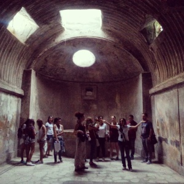

{kind=link}
Lo scorso weekend si sono tenuti a Pompei i Ludi Pompeiani, di cui uno dei suoi organizzatori, Gianluca De Martino, ha già raccontato qui.
Voglio soffermarmi sui due eventi che si sono svolti in collaborazione con Wikimedia Italia.
I progetti della Wikimedia Foundation, tra cui Wikipedia e Wikimedia Commons (qui un elenco completo di tutti i progetti con il dettaglio delle diverse lingue in cui sono presenti), sono tutti sviluppati in maniera collaborativa dai suoi utenti, chiunque voglia partecipare, perciò rappresentano nel loro insieme il maggiore esperimento sulla cosiddetta intelligenza collettiva ed allo stesso ne dimostrano il suo potenziale, amplificato dalle possibilità del ‘digitale’ e del Web 2.0.
L’obiettivo che li accomuna tutti è la crescita, lo sviluppo e la distribuzione di contenuti liberi, in molte lingue, e la messa a disposizione gratuita dei progetti, basati sull’uso del software MediaWiki e rilasciati nei termini della CC-BY-SA: ciò significa che le informazioni possono essere usate, modificate, copiate e redistribuite liberamente, rispettando i termini imposti dalla licenza.
Ogni capitolo locale/nazionale in cui si articola la Wikimedia Foundation porta avanti numerosi progetti nel proprio territorio, oltre a Wikipedia nella propria madrelingua: il capitolo italiano (qui la sezione Blog e News dei progetti di Wikimedia Italia) ha promosso diverse iniziative nelle scuole e, un esempio fra tanti, EAGLE (di cui abbiamo raccontato qui), progetto destinato alle epigrafi latine e frutto della collaborazione con la comunità GLAM (qui un elenco di progetti GLAM già avviati).
OpenPompei ha facilitato questo incontro tra i moderni pompeiani e la comunità dei wikimediani perché da esso potrebbero scaturire nuove opportunità di attivazione del territorio ed apertura più ampia possibile attraverso la condivisione della propria cultura, condivisione che grazie alle opportunità offerte dal “digitale” potenzialmente potrebbe avere una scala globale anche per piccole comunità quali quelle dei paesi del Circumvesuviano.
Tra Wikimedia ed OpenPompei una prima collaborazione è stata quella per Wiki Loves Monuments 2014, che si concluse con la premiazione del contest italiano proprio nell’area archeologica di Pompei. La Soprintendenza ha rinnovato l’autorizzazione anche quest’anno, motivo per cui l’Associazione Pompei 2033, che ha curato l’organizzazione dei Ludi Pompeiani, ha lanciato la scorsa domenica 20 settembre una seconda edizione del safari: 30 ingressi sono stati offerti gratuitamente dalla Soprintendenza stessa. Potrebbe questo essere un primo passo verso un circolo di virtuosa collaborazione tra associazioni locali ed istituzioni per promuovere le aree archeologiche del Circumvesuviano.
{kind=link}
{kind=link}
{kind=link}